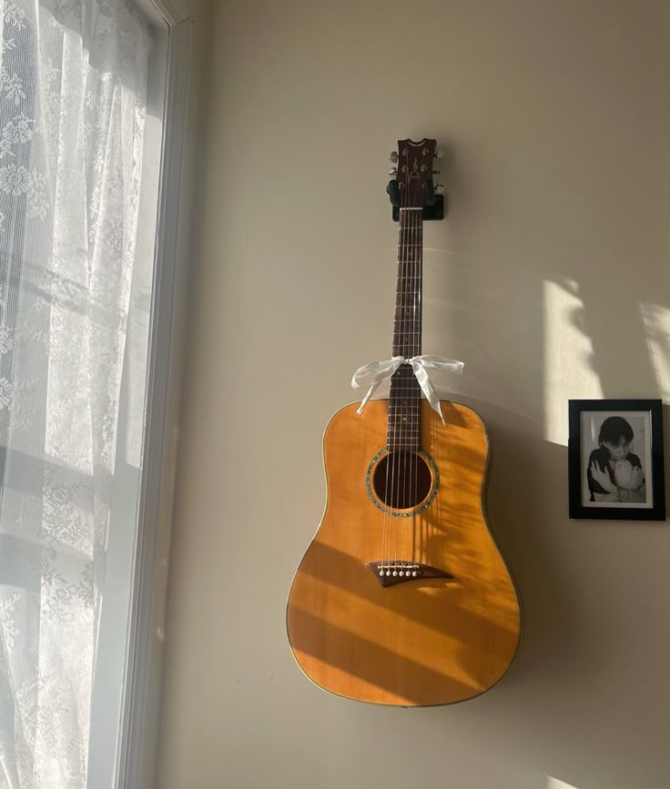
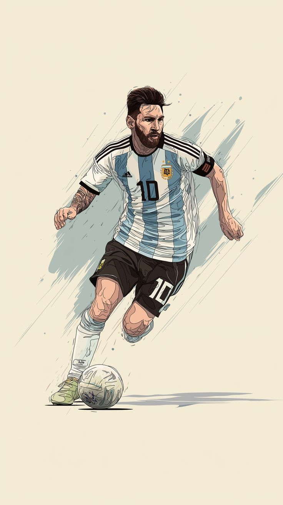
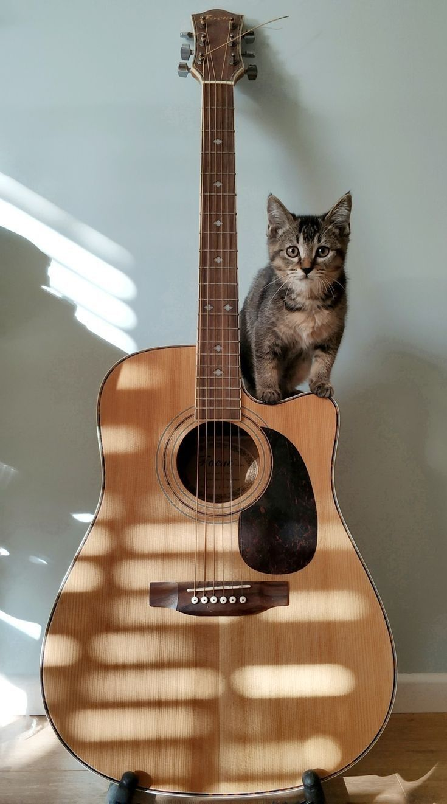

Task 6 · CSS Fundamentals
Image Properties
These images use different sizes, crops, shapes, and opacity to compare common CSS image properties.



Task 6 · CSS Fundamentals
These images use different sizes, crops, shapes, and opacity to compare common CSS image properties.


